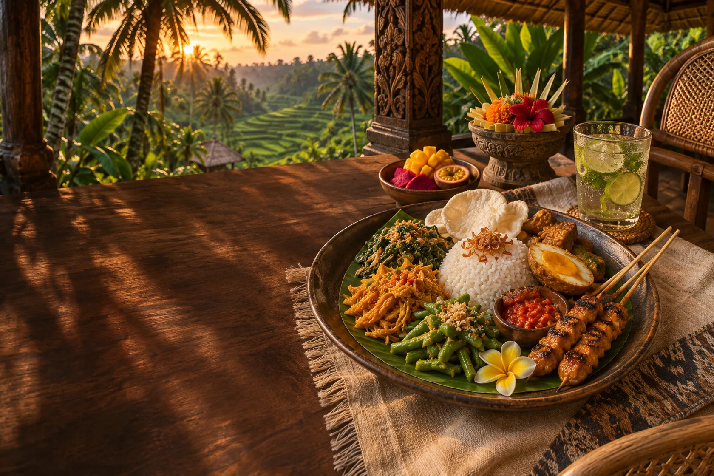

10 → 11 октября
Прилёт 23:55, MU5029. После паспортного контроля, багажа и отдельного трансфера заселение будет уже 11 октября. Согласовать сохранение брони от 10 октября.

11–22 октября 2026
Завтраки, ужины и кофе по пути. Найдите заведение по району или дню поездки.
Смотреть каталогТематическая иллюстрация ИИ
Загружаем полный реестр…
Списки сверены со снимком от 6 октября. Точные входы и часы части мест требуют подтверждения.
УЖЕ ПРОВЕРЕНО ПО КВИТАНЦИЯМ
Прилёт 23:55, MU5029. После паспортного контроля, багажа и отдельного трансфера заселение будет уже 11 октября. Согласовать сохранение брони от 10 октября.
Стандартный выезд до 12:00 по опубликованной политике отеля. Хранение багажа, душ и поздний выезд пока не подтверждены. Возврат байка у виллы, затем трансфер с багажом.
Условия отеля ↗В аэропорту 22 октября к 21:30. Вылет MU890 в 00:30 23 октября. Байк находится у отеля; трансферы с багажом планируются отдельно.
Отметьте рестораны и нажмите «Скопировать выбор». Вставьте текст в этот чат. Все 72 точки уже распределены. Переставить заведения можно кнопкой в расписании на главной странице; здесь можно сохранить список уточнений.
Выбор хранится только в этом браузере. Кнопка «Сохранить JSON» создаёт файл для переноса. Данные не отправляются автоматически.